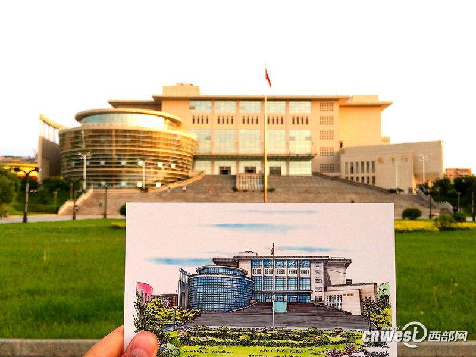
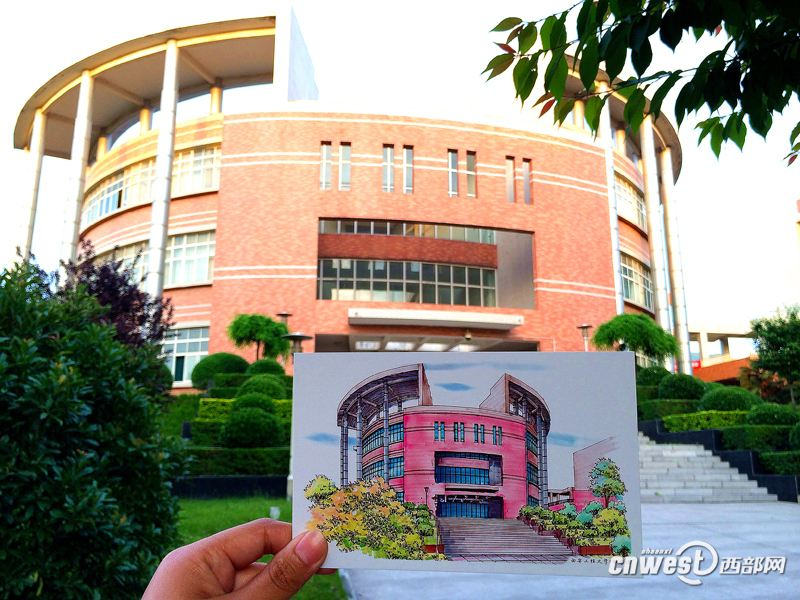
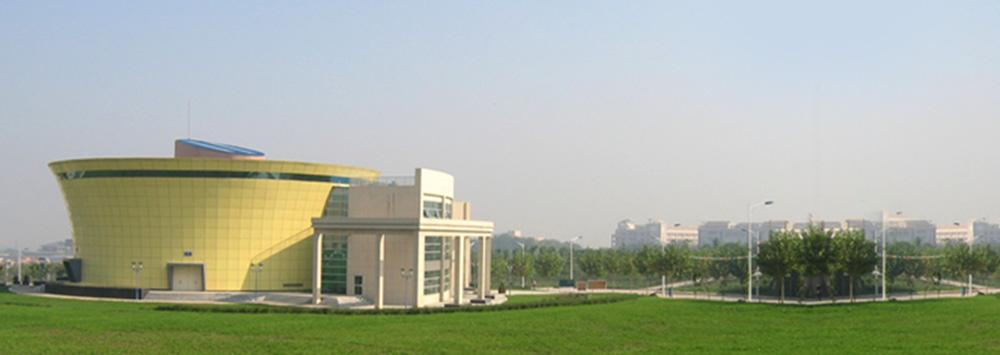

组成概况
图书馆由金花校区老馆和临潼校区新馆两部分组成， 现设有文献建设部、图书流通部、信息服务部、信息技术部、馆办公室五个部(室)。总建筑面积3.4万平方米，阅览座位近5000席。设有文献建设部、图书流通部、信息咨询部、信息技术部、馆办公室五个部(室)，现有工作人员71人，其中具有高级技术职称和研究生以上学历人员26人，中级技术职称和大学以上学历人员30人。两馆均采用收藏、外借、阅览、咨询一体的全开放式管理模式，周均开放时间102小时。
文化特色
为了便于读者借阅、查询和利用图书馆的资源，2012年图书馆购买了自助借还机，2015年引进了超星中文发现系统和Summon外文发现系统，并嵌入了百度学术搜索，实现了数据库和互联网资源的一站式检索。除了校内访问，读者还可以通过图书馆微信公众平台查询书目、续借图书；通过移动图书馆发现和传递学术资源；通过VPN和Shibboleth认证服务等多种途径实现校外访问。
信息化建设
图书馆以入学和毕业两季为契机，开展丰富多彩的新生入馆教育和数字资源宣传活动，利用“读书月”、“毕业季”、文献检索课、读书交流会、数据库宣传周、社交媒体、投稿指南、讲座培训等多种形式将阅读推广和教育培训活动贯穿全年，培养读者的信息素养和人文情怀。 随着数字图书馆的深入发展，图书馆适时调整阅览布局，增加阅览座席，改善阅览环境，将“以馆藏为中心”馆舍分割的空间格局,扩展到大厅和回廊，增设自习区、休闲区、视听区、展示区，努力为读者营造一个宽松、安静、舒适的学习空间、展示空间和交流空间。
 图书资源
图书资源 协同创新
协同创新 查找服务
查找服务 校园一卡通
校园一卡通 图书馆邮箱
图书馆邮箱 招标公示
招标公示